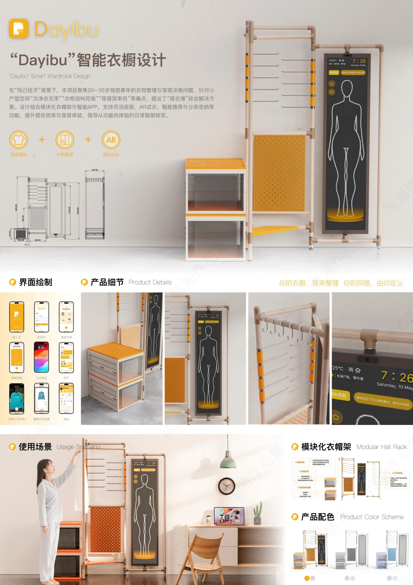
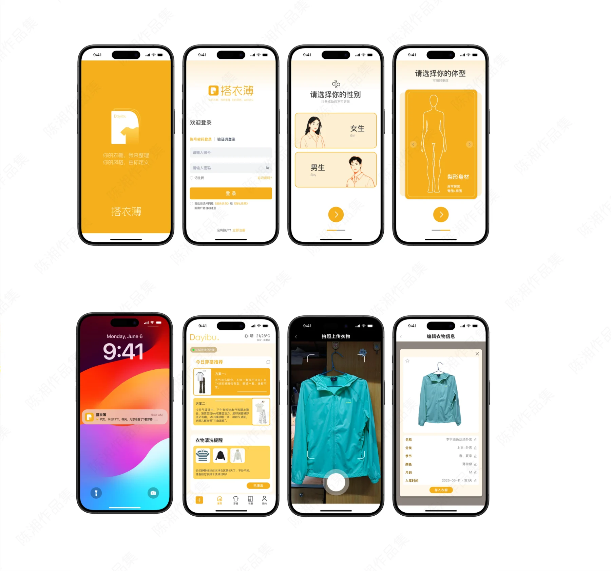
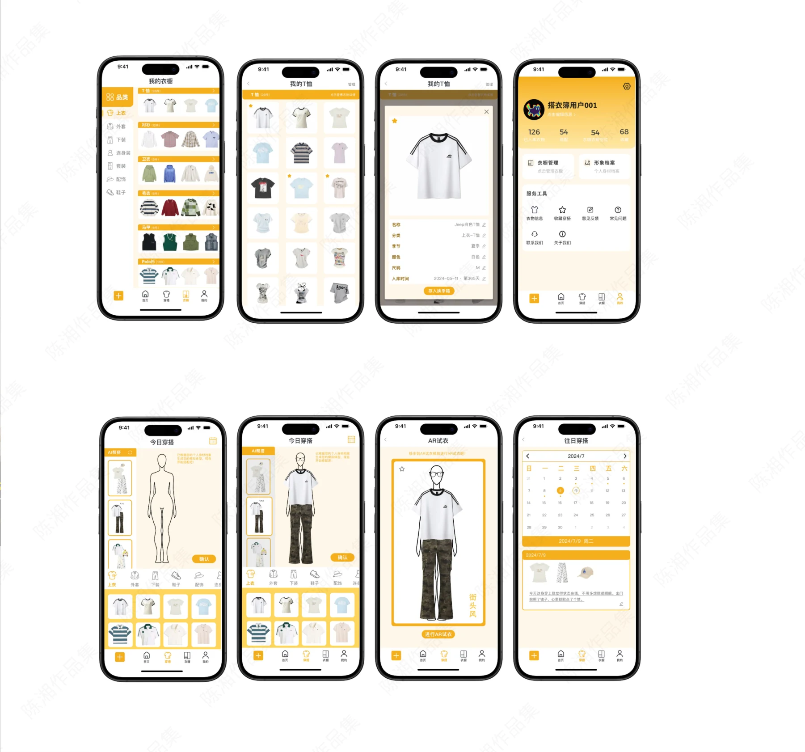

PROJECT 02 / DAYIBU
Dayibu · 智能衣橱
把模块化衣物收纳与数字穿搭管理连接起来。

小空间里的穿搭问题
方案面向独居青年的衣物管理与穿搭决策，关注小户型空间、衣物堆放和搭配效率等问题，用模块化衣帽架与配套应用整合收纳和日常穿搭。
产品与服务连接
展板提出灵活组装、AR 试衣、智能推荐和分类收纳等功能，展示模块结构、产品尺寸、配色和居家使用场景。
从建档到搭配
应用界面覆盖初始信息选择、搭配推荐、拍照上传衣物、编辑衣物信息及衣橱管理。两页展板中的同一衣橱作为一个项目展示，保留两组不同的应用界面。
PROCESS / 设计过程与展板
CLICK TO VIEW FULL SIZE以下为作品集中记录的设计方案与过程。图片可点击放大查看，保留原稿内容与水印。



内容来源：《陈湘作品集（展板）》第 1—2 页（同一项目合并）。未明确的项目时间、个人分工及落地结果未作推断。